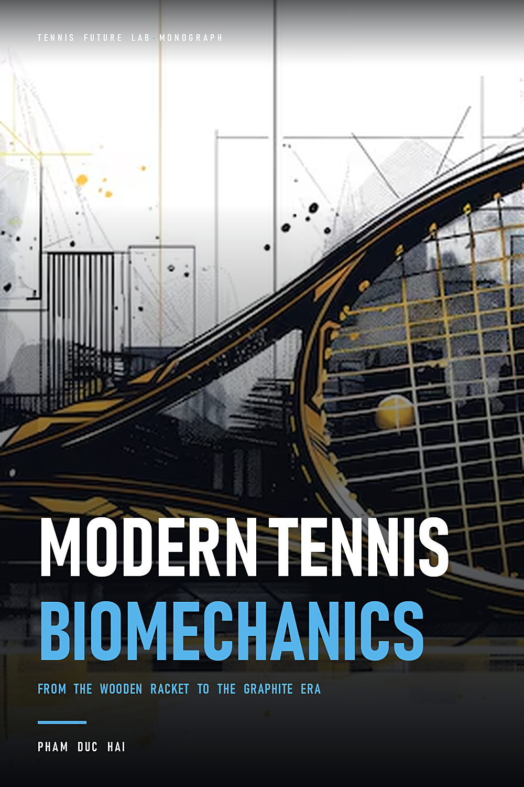

Modern Tennis Biomechanics · In-depth Analysis Handbook
Ninety years of wood
Pick up a wooden racket from the 1960s. It's almost half as heavy as the racket you're currently using, and it's heavy in a different way: all the weight is toward the head of the racket, it feels like holding a solid wooden stick with a handle. The racket's head is only 65 square inches, or about 419 square centimeters — less than two-thirds the size of a modern racket. And if you put your finger on the mesh, you'll see that its good bounce zone is pitifully small: about 20 to 25 square centimeters in the middle, no more.
Yet for nearly a century, from the 1880s to the late 1970s, competitive tennis was played with exactly that. Not because everyone likes it, but because no one has thought of another way.
A racket is nine layers of wood
Typical wooden racquets — Dunlop Maxply Fort, Wilson Jack Kramer — are assembled from nine thin layers of wood: English ash, maple, walnut. People bend each layer according to the mold, apply glue, and then press it under great hydraulic pressure until the layers stick into a block. Then comes the work of a craftsman: punching holes in the string, balancing, polishing, and labeling.
Each racket is a product of craftsmanship, not of production. Two plants from the same lot can differ by several tens of grams and even the balance point. Athletes at that time chose rackets by trying them out, not reading the parameters.
Wood has memory, and its memory is very bad
The biggest problem with wood is not its weight. It's humidity. Wood absorbs water, expands, then dries and contracts. After a few weeks, a racquet left in a bag in humid weather will warp, the face will twist, and the shot will begin to misalign in ways that cannot be corrected with technique. That's why every tennis player at that time owned a four-screw wooden clamp, called a press: insert the racket, tighten the four screws, and the racket was held straight until the next match.
Imagine the consequences. If your racket can bend in the rain, everything else has to stiffen to compensate. The wrist must be absolutely locked at impact, because even the slightest deviation of the racket face will send the ball going in the wrong direction — there is no wide bounce zone to forgive. The stroke must be linear: bring the racket from back to front in a straight line, using the whole body to focus on the ball, not relying on the bounce of the frame.
Why doesn't anyone change?
During those ninety years, someone tried. Steel rackets appeared in the 1920s, were lighter and more durable, but vibrated like guitar strings and numbed the wrists. Aluminum rackets have been tested many times, but they all failed because the frame was too stiff, transmitting shock straight to the elbow.
And there's a more subtle reason: the entire technical foundation of this sport has been built on the assumption that the racket is a heavy, small, and fragile piece of wood. Serving technique, net play stance, hitting stance — all are optimal for such a racket. Changing rackets is not changing equipment. It changes the entire way of playing.
So when change comes, it doesn't come from within tennis. It came from someone who had never played tennis professionally, and from a question that no one in the village bothered to ask: what if the racket surface was wider?
Punch into geometry
Howard Head is an aeronautical engineer. He worked on transport planes during World War II, and later became famous for an invention that had nothing to do with tennis: the metal snowboard. People call him the man who introduced aluminum alloys into skiing.
Head played tennis at the amateur level, and played it poorly. But he has a professional habit that good players don't have: when he loses, he doesn't ask where he went wrong, but where the equipment went wrong.
The answer he found lies in a very specific place: when the ball hits the racket face off center, the racket is twisted around its vertical axis. The racket face turns away, the ball flies in the wrong direction, and the player's hand experiences a twist in the wrist. With a 65-inch square racket head, just two inches off is enough to ruin the shot.
A recipe, not an inspiration
The ability of an object rotating about its axis to resist torsion depends on the moment of inertia, denoted I, and for a racket frame approximately like a circle of radius r, it is proportional to the square of the radius times the mass: I ≈ m·r². That square is the key point. Doubling the diameter of the racket face quadruples the resistance to twisting, with the same weight.
In other words: the same heavy racket, if made wider, will make it more stable when hit off-center — without the player being stronger. It's not an improvement in feel. It's a calculation.
In 1976, Head introduced the Prince Classic 110 to the market: racket head 110 square inches, or about 710 square centimeters, weight 330 to 350 grams. The good bounce zone expands from 20–25 square centimeters to about 90 square centimeters — more than three and a half times. The name "oversized" was born from there.
People call it a trick
The first reaction of experts was ridicule. A racket as big as a fly swatter, used for old people and beginners, cannot be top tennis. The magazines wrote that it ruined the technique. Coaches forbid students from using it.
Then came the 1978 US Open. Sixteen-year-old amateur Pam Shriver entered the tournament with a Prince Classic 110 and took down the biggest names to reach the final. She lost the final match, but the message could not be taken back: a sixteen-year-old girl had just reached the final of a Grand Slam tournament with a racket that the whole village called a toy.
No one debates further whether a wide racket face is effective or not. The debate turns to another place: no matter how big it is, it's still controllable.
What Head cannot calculate
There is a price. The wide racket face increases the moment of inertia around the vertical axis, but also increases air resistance and makes it difficult for the racket to rotate quickly at close range. At net, where you have about four-tenths of a second to react, an oversized racket becomes an obstacle.
And there was a deeper consequence that no one had named at that time: when the good bounce area broadened, players were no longer forced to lock their wrists. The shot can be looser, later, and still enter the field. The techniques that an entire generation had been taught — locking the wrists, hitting straight, pressing the entire body — began to lose their raison d'être.
But getting there requires a different material. Aluminum is enough to prove the principle, not enough to build a new tennis platform. Aluminum is hard, brittle, and transmits shock. What comes after it is what changes everything.
Graphite era
Carbon fiber is not a new material. It has been used in aviation and bicycle racing since the 1960s. What is new is the way it is used to make a racket: not molded into blocks, but woven in the desired direction and then baked in an epoxy resin mold.
This difference is more important than appearance. A wooden bar has only one bearing direction. A carbon fiber frame can be designed to be torsionally stiff but flexible in flexion — meaning the frame still flexes at the blade when swinging, but doesn't twist when the ball hits off-center. The racket for the first time has two different mechanical properties in two different dimensions.
As a result, the racket frame becomes an elastic part. It stores energy when it is bent and gives it back when it bounces off. That is exactly what wooden rackets never have.
Two rackets shape two styles of play
In the early 1980s, two products almost simultaneously divided the tennis world in half.
The first tree is Prince Original Graphite, known to players as POG. Its special feature lies not in the material but in a horizontal brace connecting the two sides of the racket, placed just below the good bounce zone. That brace divides the racket surface into two small cells, reducing the deflection of the net in the middle and making the racket surface more stable. Michael Chang and Andre Agassi grew up with this racket.
The second is the Dunlop Max 200G, released in 1983. Instead of weaving yarn, Dunlop molded a carbon fiber reinforced nylon composite. The result was a soft, compact frame that absorbed shock very well — a feel closer to wood than any other racket of the time. John McEnroe uses it. Steffi Graf used it, and won twenty-two Grand Slam titles.
Two rackets, two philosophies: one hard and stable, one smooth and elastic. Both no longer require locked wrists. And both paved the way for a style of play that had previously been almost non-existent: standing at the back of the court, spinning continuously, waiting for the opponent to make the first mistake.
The era of the last man standing on the field
With a wooden racket, net play is a reasonable choice: the ball moves slowly, you have time. With a carbon frame, the ball leaves the racket much faster, and a strong spin can bounce well above volley. Net play becomes a gamble.
The generation of Agassi, Chang, and Graf moved the whole game to the back of the field. Since then, that model has remained almost unchanged.
And then both companies lost
There is a memorable paradox in this story. Dunlop and Prince are the two companies that invented the modern racket. Both lost their market position to latecomers.
Dunlop stuck with an expensive and slow molding process, while its competitors turned to woven yarn — cheaper, faster, and easier to customize stiffness for each racquet line. Prince went in the opposite direction: after the success of the oversized line, the company pushed the racket surface even wider, to the point of exceeding the threshold that professional tennis players could still control, and gradually lost its foothold in the competition segment.
The lesson is not about business. The lie is that both companies believe that what made them successful — the wide racket face, the soft molded frame — is something that needs to be pushed further. While the real game-changer is something else: the ability to adjust frame stiffness by position, something only knitting technology can do.
2000s: aerodynamics and monofilament
Two decades later, the racket changed twice more, but in a less noisy way. The racket frame is beveled and tapered at the neck to reduce air resistance when swinging quickly. And more importantly: monofilament lines switched from animal gut and synthetic nylon to copolymerized polyester, which is smooth, stiff, capable of sliding and rebounding extremely quickly.
It is the string that propels topspin above 3,200 revolutions per minute in professional shots. The racket gives you the frame; The rope gives you a spin. And spin is what has shaped the entire sport over the past twenty years.
To understand how a wire can do that, it's necessary to go back to a very short period of time: three milliseconds.
Four numbers of a racket
A modern racket weighs 295 to 320 grams. The wooden racket weighs 380 to 410 grams. Looking at those two numbers, you would think that the racket is now lighter, so it is easier to swing. But if you hold a modern racket for ten minutes, you will probably feel more tired than a wooden racket. The reason: mass is not something you perceive.
There are four numbers that determine how a racket behaves. Those four numbers are not independent of each other, and that's the whole problem.
One: static mass
This is the number you read on the packaging, measured with a scale. It determines the feeling of grip and the level of shoulder fatigue after three sets. But it says almost nothing about how it feels when swung.
Two: swing weight
Swing weight is the inertial mass of the racket around the point of your grip — that is, what your arm actually has to swing. It depends on the mass and where that mass is located, according to the square radius relationship that Howard Head used: the same mass, placed further away from the hand, is heavier when swung, exponentially.
This is the number that determines the feeling of "a compact or light racket". A specialized meter gives a number, and the practical reading is as follows: below 310, the racket rotates quickly, suitable for nets and defense; 310 to 320 is the balance zone for most players; above 330 is a heavy racket — it crushes your opponent's heavy ball without vibrating, but you have to have the technique to swing it for two hours.
Two racquets weighing 305 grams can have a swing weight difference of thirty units. That's why two rackets "similar in parameters" feel completely different.
Three: balance point
The equilibrium point shows where the mass is concentrated. People measure from the shank up and convert it into the number of points deflected towards the head or shank. A light racket, about 4 to 8 points, with a balance point 31.5 centimeters from the grip, will give the feeling of a light racket head, extremely fast rotation, and easy acceleration in a short space.
On the contrary, head-heavy rackets give more penetrating shots without needing to be swung quickly. But it takes away reaction time — what you need most at the net.
Four: frame stiffness
Stiffness is measured by an index called RA, which ranges from about 55 to 75. A stiff frame, indexed at 68, returns very strong force: the ball goes fast without you having to do much. But it also transmits shock to the elbow and wrist, and it's less forgiving of off-center hits.
A softer frame offers more flex, keeps the ball on the net longer, gives a greater feeling of control — but requires you to apply your own pressure.
Why can't it just increase by one number?
This is the part that most players skip. You can't add mass to the head of the racket to increase power without also increasing swing weight, shifting the balance point toward the head, and changing the feel of the swing. Each adjustment is a trade-off.
Three locations for applying lead tape give three different results, and this is the most practical knowledge in this chapter:
- At the top of the racket head (12 o'clock): increases the strongest impact force, because the mass is furthest from the axis of rotation. In turn, the racket is noticeably slower when defending.
- On both sides (3 and 9 o'clock): extends the bounce area well and increases resistance to twisting when the ball is off-center, without virtually slowing the swing. This is the most effective location per gram of lead spent.
- In the racket grip: increases overall mass but pulls the balance point toward the hand, giving a compact and smooth feel. The blow is not stronger, but the hand shakes less.
Amateur players often put lead on the top of their heads because they think that more force means more power. In fact, most find their shots get worse in the first two weeks — because they lose racket head speed, which is what creates spin and depth.
And here's the most memorable thing: these four numbers describe the racket, not the shot. A racket with perfect parameters in the hands of someone who swings it wrong is still a wrong racket.
Eight-sided racket handle
Hold the racket upright in front of you, the racket surface perpendicular to the floor, then look at the bottom of the grip. You will see not a circle but an eight-sided shape. Those eight small planes are the entire positioning system of the hand.
The eight sides are numbered clockwise, starting from the top plane when the racket is upright. Edge 1 is on top, edge 2 is on the top left corner, edge 3 is on the left side, edge 4 is on the bottom left corner, edge 5 is on the bottom, and so on. Each grip is determined by a single answer: which side the base joint of the index finger rests on.
That's why the eight sides are so important. They turn something that's difficult to describe — "holding it right" — into something that can be tested in two seconds, and can be repeated exactly the same every time.
Side 2: continental style
Place the base of your index finger on edge 2. If done correctly, you will feel like you are holding a small hammer, or like you are shaking hands with the handle of a racket. The racket face is slightly open compared to the floor.
This is the most versatile grip in tennis. It works for serve, volley, overhead smash, chop and drop — almost any shot where the ball comes from above or where you need to get the racket face open. Reason: with this grip, the wrist can rotate in both directions without restriction, so you can both cut and spin.
Disadvantage: it is not a natural grip for a high forehand. Beginners often experience wrist pain when trying to hit the forehand with side 2 at high ball range.
Side 3: oriental style
Place your palm flat behind the racket handle, the base of the index finger falls on edge 3. The racket face is almost vertical. This is the grip style that most Vietnamese movement players are using, usually because they were taught from the beginning and never changed.
It gives a very strong flat shot, a tight ball path, and a cross-court path. The natural contact point is at hip level. But it is also a difficult grip to create spin: the racket surface passes over the ball horizontally, so the ball flies flat and falls thanks to gravity, not spin.
With a wooden racket, that is a reasonable grip. With a modern carbon frame, it is a grip that causes players to frequently hit the ball long or close to the net, as there is no spin to pull the ball down the court.
Side 4: semi-western style
Rotate one more edge: joint the base of the index finger up to edge 4, palm facing more. This is the most common grip in modern tennis, and is almost the default in academies.
The reason is very pragmatic: it puts the racket face in a natural position to go from low to high through the ball. You don't have to try to create spin — your natural swing creates it. The ball rolls over the net with a much larger margin of safety, then lands in the opponent's court.
The price is the low ball range. Knee-high balls, especially on grass or when the opponent cuts the ball, become difficult to handle because the racket is closed.
Side 5: western style
Turn one more edge, palm almost completely facing the floor. This grip gives the most spin and is a tool for high-bounce hitters on clay courts. But it's almost useless against low balls, and requires very strong wrists.
Really something to remember
Grip style is not a preference. It determines the range at which you are best at hitting the ball, and that range determines which way you will play. A player holding the side 4 will naturally like the ball to be high and spin. A person holding side 3 will naturally prefer the ball to be at hip level and hit it flat. Both can play well — but not with the same strategy.
And there is a small detail that few people pay attention to: when you change the grip style, you must also change the contact point. Holding side 4 and still catching the ball at hip level like side 3, the ball will always go long. The contact point should move forward, higher, and farther from the body.
Three milliseconds of monofilament
The ball hits the net in about three milliseconds. During those three milliseconds, two things happen almost simultaneously: the mesh surface sinks in, and the warp threads slide horizontally.
The second thing is worth mentioning. When the ball hits the racket face at an angle, the warp threads are pushed aside, slide over the weft threads, and accumulate potential energy like a rubber band being pulled. Then they bounce back to their original position at very high speed. While rebounding, they rub against the surface of the ball and create spin.
Meaning: most of the spin in modern tennis doesn't come from you "stroking" the ball. It comes from the mesh rebounding on its own. You just need to pass the racket over the ball at the right angle, and let the string do the rest.
That's why modern racquets allow for much looser strokes than they did in the days of wooden racquets. With gut strings, the string slides poorly, bounces back weakly, and the player is forced to create spin with their wrists. With its stiff, smooth synthetic rope, the mesh is almost like a pre-loaded spring.
Why do smooth strings spin better than rough strings?
It sounds backwards. Rough wire is more shiny, right?
Not necessarily. The rough string grips the ball well in the first moment, but it cannot slide, so it cannot accumulate potential energy, so it cannot bounce back. Smooth strings slide farther, store more energy, and bounce back stronger — enough to overcome the friction that rough strings provide. That's why smooth, hard polyester strings have almost completely replaced gut strings and soft nylon strings at a high level.
Knitting density: 16 vertical, 19 horizontal
These two numbers are the number of warp threads and the number of weft threads. Opening density, for example 16 vertical and 19 horizontal, gives the strings more room to slide, resulting in strong rebound, deep bite and higher shooting angle. It is the best spin support configuration.
Tight density, for example 18 vertical and 20 horizontal, limits rope slippage. The ball travels flatter, has a lower flight, and is controlled with every inch of precision. It is the choice of those who hit flat, hit early, or play on grass.
There is no better configuration. Get a configuration that matches your swing.
Tension: the number is decreasing
Thirty years ago, people strung their racquets at 60 to 65 pounds. Today, most professional tennis players weigh between 46 and 52 pounds, and some go under 45.
The reason is not that they like the soft feeling. That's because low tension allows the net to sink deeper when the ball hits — the ball is "held" on the racket a little longer, and the string has more room to slide and rebound. Both increase spin.
The price of low tension is control. If the net sinks deeper, the ball will shoot out in a more unpredictable direction, especially when you hit off-center or block a heavy shot. So professional tennis players tension low but hit a lot of spin — spin is what keeps the ball in the court when tension is low.
Order of priority when choosing wires
If you can only remember one thing from this chapter, remember the following order. First is durability: if the wire breaks in the middle of a battle, everything else is meaningless. The second is feel: if you can't feel the ball on the net, you will never be able to adjust the depth. Third is spin. And finally there's tension — what players' movement changes the most, while it affects the least.
There is a truth that is rarely said: most players change strings too late. The polyester string loses its rebound ability after about ten to fifteen hours of beating, while still remaining intact. You continue to play with a dead net, feel the ball lacks power, and think you're making a mistake. Usually it's not.
Seven links
When you watch a professional tennis player's forehand in slow motion, what's impressive is often the speed of the racket head. But that speed is not something created in the arm. It is the end result of a series of seven stages, and each stage can only do its job if the previous stage has been completed in time.
Those seven stages, in order:
- Ground. Feet push down on the floor, and the floor pushes back. This is the only resource your body has—everything else is just transitional.
- Knee. The knee bends and then extends, turning the vertical force into a force that pushes the body up and forward.
- Hips and pelvis. Hips rotate around the longitudinal axis. This is the stage that creates most of the rotational torque of the shot.
- Upper body and shoulders. The upper body continues to rotate, but one beat slower than the hips — it's this delay that creates the acceleration.
- Inner shoulder joint. The arm rotates internally around its axis, bringing the elbow up and forward.
- Forearm and elbow. The forearm extends, increasing the turning radius and thus racquet head speed.
- The wrist opens at the point of contact. This is the last leg, and it's not an active move — it's a consequence of the previous six moves.
The key point lies in the word "late". If all seven legs happen at the same time, you have a push. If they happen one after the other, each leg a little slower than the last, you have a whiplash. That's the whole difference between a hard hit and a quick hit.
Whip effect
The modern racket frame doesn't just transmit force — it stores force. During the last fifteen percent of the swing, the racket's frame flexes and then straightens, and the racket head shoots up at a speed that can exceed 120 miles per hour at the professional level. That's why the modern shot looks like the racket shoots itself out of the hand.
With wooden rackets, this phenomenon is almost non-existent. The wooden frame is not vertically elastic, so it only transmits force linearly: the more you push, the more the ball moves, and the racket head speed stops at about 65 to 75 miles per hour. If you want the ball to be faster, the only way is to put your whole body on the ball, just like what tennis players at that time were taught.
Why can't new players use this string?
Most beginners start their swing from the arms. They see the ball, they swing their arms. The lower seven legs — legs, knees, hips — are barely involved, so the shot has only the force of one arm. That hit may hit the field, but it is never heavy.
The second problem is timing. This sequence takes about four-tenths of a second to complete. If you start rotating your hips when the ball is close, the third leg won't have time to transfer power to the seventh leg, and the shot will "break" in the middle. It's a very familiar feeling: you swing with all your might but the ball still misses.
Therefore, the correct exercise is not to swing harder. Is the episode starting earlier. And the easiest way to check is to count: if you can say "one" when the ball leaves your opponent's racket and "two" when you start to rotate your hips, then you're on the right rhythm.
A note about episode order
Don't practice all seven stages at the same time. People often make this mistake after reading a chapter like this one: trying to control every joint, and the result is a stiff, robotic shot.
The logical sequence is from the bottom up. First, just practice kicking your legs and rotating your hips, letting your arms relax completely. Once the hips have automatically rotated at the right time, add the upper body. Once the upper body is connected to the hips, add the arms. The final step — the wrist release — usually appears by itself when the previous six steps are correct, and if you intentionally release the wrist, it will almost certainly release at the wrong time.
Forehand shot
The modern forehand starts before the ball arrives. It starts the moment the ball leaves the opponent's racket, and it starts with the shoulder.
This is called early rotation: turn your shoulders and hips about ninety degrees as soon as you realize which way the ball is going. The non-dominant hand is stretched horizontally, pointing toward the ball, doing two things at once — maintaining balance and measuring distance. The racket head is up. The entire body is in a loading position, while the ball is still flying over the net.
This is where most movement players lose their strokes. Not in the swing, but in the fact that they start swinging when the ball has gone to this side of the net. At that time, there was no time left to rotate their bodies, so they could only swing their arms.
Front contact point
The modern forehand catches the ball in front of the body, at hip-to-waist level, and farther from the body than the classic flat stroke. Not because the position is beautiful, but because it allows the arms to stretch at the right time — and stretching is a condition for increasing racket head speed at the end of the power transmission chain.
If you catch the ball across or behind your body, your elbow will get stuck in your ribs. The strike becomes a thrust with the forearm, losing most of the rotation from the hips. The ball lacks depth, and you feel like you have to try harder — so you swing harder, and the more wrong you are.
A simple test: after hitting, if you look down and see your front foot is still behind the point of contact, you are late catching the ball. The weight should be on the front foot before the ball arrives, not after.
Wrist: locked or open
This is where old and new knowledge conflict most clearly, and is also where it is easiest to misunderstand.
With wooden rackets, the wrist must be absolutely locked. The frame is small and the good bounce area is narrow, so any twist in the wrist is enough to cause the racket face to misalign and the ball to go wrong. Hard locking is the only way to preserve direction.
With a carbon frame, the racket frame has very good anti-twisting properties. You don't need a hardlock anymore — and if you do a hardlock, you block the last leg of the drive chain. The wrist should now be stable but not tense: it holds the racket face at the right angle, and lets the racket frame do the rebounding.
This difference explains a very common phenomenon. People who learned tennis in the 1980s often had very strong forehands but lacked racket head speed, because their wrists were locked out of old habits. Recent learners are the opposite: loose wrists, high speed, but the racket surface is unstable when hit by the body.
Elbow and space
In the modern forehand, the elbow never bends close to the side. It keeps a small gap from the torso, enough for the forearm to extend. That space is what coaches call "hitting from the outside in" — but that term is confusing, because it doesn't mean swinging the racket in an arc around the body.
It just means: the arm is not stuck. If your elbow is close to your ribs, you only have your forearm to hit. If the elbow has space, the whole arm is involved.
Three errors and how to diagnose them
Shadows are often long. The cause is usually not swinging too hard, but the racket face being open at impact — due to catching the ball late and trying to save with the wrist. Fix it by picking up sooner, not by swinging lighter.
The ball often hits the net. The racket face closes too early, or the swing goes across the ball instead of low up. Test by placing a ball on the floor in front of you and practice walking over it from the bottom up.
The ball goes short, has no depth. This is the most common error and also the most difficult to fix, because it is not located on the arm. It's in the legs: you're not shifting your weight forward, so there's nothing to transfer to the ball. There are no wrist exercises that will correct this problem.
It's worth noting that all three errors were misdiagnosed by players in the same direction: they thought they needed to hit their arm differently. While the modern forehand is largely determined by two things below and behind: footwork and timing of body rotation.
Three sets of legs
The footwork in the modern forehand is not a matter of aesthetics. It's about where you get the torque from, and how much time you have to recover.
There are three ways to place your feet, and each way answers those two questions in a different direction.
Open set of legs
Both feet are parallel to the bottom line of the court, the body is facing the net, there is no step back. About eighty percent of the weight goes to the back leg — for right-handers, the right leg — and then shifts to the left leg while rotating the hips.
This set of legs turns the stroke into a rotational movement around the body's longitudinal axis, with almost no translational movement. Its biggest advantage is not the force, but the recovery time: after hitting, you are ready for the next shot, because the legs are not crossed.
That's why open legs are the default choice when you're drifting out wide. You have to hit while running, and you need to get back to the center of the field right away.
Disadvantage: since there is no forward motion, the ball is not pushed forward much. Depth should come from racket head speed and spin, not from body weight.
Semi-open leg set
The front leg rotates about forty-five degrees relative to the bottom line of the court. This is the set of feet that accounts for about seventy percent of duels at a high level, and the reason is simple: it is the balance between two things that the other two sets of feet have to choose from.
You still have some forward movement into the ball — so the ball has depth — and there's still hip rotation — so the ball has power. You don't take as much recovery time as neutral legs, and don't lack penetration like open legs.
If you only learn one set of legs, learn this one. It's not the best choice for every situation, but it's the right choice in nearly every situation.
Neutral foot set
The left foot steps straight into the field, the body turns sideways, the weight passes through the ball in a straight line. This is the footwork of an attacking shot: the greatest penetration, the tightest ball path.
It's for short balls — when you have time to step in and want to finish the point. And it's also the set of feet you have to use when stepping back to hit a deep ball, because you need to bring your weight forward so the ball doesn't miss.
The price is time. Stepping in and out takes about two steps, and those two steps are the two steps you don't have to prepare for the next step.
What these three sets of legs actually say
Looking at three sets of legs, you can read a player's intentions. The person standing with his feet constantly open is trying to keep score, waiting for mistakes. The person with neutral footwork is constantly trying to finish. The semi-open stand is playing to the beat — and that's why it's most popular.
But there is an important technical point that few people teach: these three sets of feet are not selected before the ball arrives. They are chosen for the duration of the ball's flight, based on the depth and speed of the ball. If you decide in advance, you'll always use your most familiar footwork — and you'll come across balls that that footwork can't handle.
The correct way to practice is to practice recognition: stand in the middle of the field, let the batter alternately hit the short ball, the long ball, and the ball drifting to the sideline. Don't think about technique. Just pay attention to what your foot chooses, then compare it to the depth of the ball. After a few hundred, choosing a set of legs becomes reflexive — and that's when it comes in handy.
Flight path
A tennis ball flying over the net does not follow a parabolic path. It follows the path that the layer of air close to its surface decides. And that layer of air is controlled by only one thing: which way the ball is spinning.
The principle is simple. When a spherical object rotates in an air stream, the layer of air clinging to the surface is pulled to one side. That side has higher gas speed and lower pressure. The opposite side has lower gas velocity, higher pressure. The pressure difference pushes the ball toward the low pressure side — that is, toward the direction it is spinning toward. This effect is named after the physicist who described it in the nineteenth century: Magnus.
Three types of spins, three completely different flight paths.
Cyclone: the ball goes down and then bounces up
With a topspin shot, the ball rotates in the direction that the top moves forward. The layer of air on top is pulled in the same direction of flight, the pressure decreases; The gas layer at the bottom is compressed, the pressure increases. The result: a downward force.
That's why a strong spin can fly over the net at a high altitude — completely safe — and still land on the court. Gravity cannot do it alone; Only aerodynamic force can do it.
And when the ball hits the court, the spin remains. The top rotates forward, the friction with the ground is reversed, and the ball bounces with some spin that turns into vertical motion. It's a bounce that shoots up to shoulder level or higher — something that causes the person at the back of the court to step back, and makes hip shots impossible.
No spin: straight line
A ball that barely rotates flies by inertia. It goes fast, flies low, and falls only by gravity. It's a flat shot.
Advantage: it comes faster than any other shot, because almost all the energy goes into the forward motion. Disadvantage: safety margin is very small. A flat ball that crosses the net at ten inches and lands thirty inches below the bottom line is a perfect shot — but if everything is ten inches off, it's a foul. There is no vortex to save.
That's why the flat shot has almost disappeared from top tennis. Not because it is weak, but because it is unforgiving.
Backspin: the ball glides and misses
The slice causes the ball to rotate in the opposite direction. The gas layer at the bottom is pulled in the same direction of flight, the pressure decreases; The gas layer on top is compressed, the pressure increases. The result is a lift — the ball stays in the air longer than it would without swing, so it can go farther with the same force.
But the more important thing happens when the ball hits the field. Backspin causes the ball to slide forward instead of biting the court, so it doesn't bounce. It glides. On hard courts, a good slice can bounce as low as knee-level, and the topspin player has to bend down to catch it.
That's the tactical use of the cut: it doesn't win points directly. It deprives opponents of what they need most — height to hit.
Three types of spins in one match
It is worth noting that these three types of vortices are not mutually exclusive. Good players use all three in the same game, and often in the same shot: a slice to pull the opponent net play, a topspin to get past them, a flat to finish.
And every time they change the spin style, they also change the height of the contact point and the timing of the shot. The cut needs to catch the ball higher and earlier; Topspin needs to catch lower and pass more through the ball. Movement players usually only have one type of spin, and therefore only one beat. The opponent just needs to find that rhythm.
One-handed and two-handed backhands
The backhand is where two different techniques coexist, and that's why it's the most controversial in the sport. There is no right answer to the question "one-handed or two-handed". There is only one right answer for each person, each height, and each playing style.
One-handed backhand: leading shoulder
The starting point of the one-handed backhand is with the front shoulder — for right-handers, the right shoulder — pointing directly at the incoming ball. Not towards the net. Aim for the ball. It's a small difference in words but a huge difference in geometry: it causes the shoulders to rotate almost perpendicular to the net, and places the arms in the correct plane of the swing.
The non-dominant hand holds the third fork of the racket during preparation. It's not decorative — it keeps the racket head high and stable, and it measures distance. When you start swinging, that hand lets go, but it has done its job.
The real advantage of the one-handed shot is not the power. It's reach. You hit the ball about a foot farther from your body than with a two-handed shot, and with out-of-bounds or low balls, that thirty centimeters is all the difference between a strike and a reach.
The disadvantage is also obvious: high shine. A ball that bounces up to shoulder height is an inherent weakness of the one-handed shot, because you have to hit it above the shoulder, where the arm loses all leverage.
Two-handed backhand: left hand leads
With a two-handed shot, the hands are held together on the racket handle, and the most important thing to understand is: this shot is essentially a left-handed shot, performed with two hands. The right hand indicates support and stability.
That's why people who play good two-handed shots often have a good left-handed shot, and those who only think about their right hand have a weak two-handed shot.
Mechanism: bend the knees deeply, rotate the hips strongly, then the left hand reaches out to hit the ball in front of the thigh. The ideal point of contact is chest level or slightly lower, as your hands give you good leverage at that level.
Advantages: stable with high balls, withstands heavy balls, and easier to learn for beginners. Disadvantage: short reach, and you lose the ability to slice the ball with the same swing.
Shadow cut: bottom knife
The slice is the most misunderstood shot. People call it the defensive owl, and use it when stuck. In fact, it is one of the most effective offensive shots at the movement level.
Mechanism: lock the wrist, open the racket face, then slide the bottom edge of the racket across the bottom of the ball in a line from high to low. You don't hit the ball — you slice through it.
The result is backspin, and as the previous chapter said, backspin makes the ball slide instead of bounce. On hard courts, a deep, heavy slice will bounce so low that the topspin player has to bend down completely, losing all the height needed to generate spin. You just took away their weapon without hitting faster.
And the cut has a practical advantage: it's easy to learn. Locked wrists, open racket face, high-to-low path — three elements, no complicated movements. That's why it's the first shot a beginner should learn after the forehand, not the spin backhand.
Which shot should you choose?
If you're under six feet tall, the two-handed shot is almost a must: the one-handed shot requires reach and leverage that that height doesn't give. If you play grass or like net play, the one-handed shot gives you more natural reach and cutting ability. If you play at the back of the court and need to withstand a heavy ball, the two-handed shot is more stable.
And if you've been playing the same style for ten years, don't change. The cost of relearning outweighs the benefit, unless the current shot is a weakness that is exploited in every match.
Serve: from knee to racket head
The serve is the only shot in tennis over which you have complete control: no incoming ball, no time constraints, no one to interfere. And because of that, it's the shot that movement players get wrong the most — because there's nothing forcing them to get it right.
The modern Serve has a very clear structure: loaded at the bottom, transmitted through the body, released at the top. Three parts, in that exact order, and each broken part leaves an easily recognizable mark.
Trophy pose
This is the loading position, and its name is very accurate: both arms are raised as if holding a trophy, the toss arm is stretched vertically like a pillar, the racket head is bent deeply behind the back, the knees are bent.
There are two important details that players often overlook.
First: the hand tossing the ball straightens and stays there. If that hand flexes after releasing the ball, the point of impact drops and you lose about thirty centimeters of height — enough to make serve a normal shot.
Second: the racket head bends deeply behind the back. This is where energy is stored. If the racquet head points down to shoulder level, your serve will lack the right amount of acceleration that the racquet frame can produce. That's why beginners' serve is often "flat" — not because they hit it flat, but because they have nothing to release.
Touch points and forearm pronation movements
The point of contact for a good serve is at the top of your reach, slightly inward, and in front of your head. Not the back of the head. If you hit the ball behind your head, everything else falls apart.
And at the point of contact, there's a move that most movement players don't have: forearm pronation. The forearm rotates around its axis, inside out, very quickly, right at the moment of contact with the ball. This move isn't wrist flexion — it's forearm rotation.
This is the main source of speed for modern serve. Without it, you can serve the ball into the court your whole life without ever surpassing the speed of a normal shot. With it, racket head speeds can exceed 130 miles per hour.
A spot check: stretch your arm straight out in front of you, palm up. Then rotate your forearm so that your palm is facing down, only rotate your forearm, not your shoulder. That's exactly the movement you need at the touch point — only it happens in about three-hundredths of a second.
Grounding
After contact with the ball, your back foot swings up and through, your body turns to face the net, and you land on your front foot — about a foot or so inside the bottom line.
Many players land on their back foot, or land right on the line. Both are signs of the same error: they are not putting their weight on the ball, so the body is not propelled forward. That Serve can still enter the field, but it lacks penetration, and the ball carrier will have time.
Four errors and their identification signs
Shadows are often long. The point of contact is too low, or the racket face is open at the point of contact. This is usually due to the hand tossing the ball flexing after release.
The ball often hits the net. Too low a contact point combined with a lack of forearm action: the ball does not have enough height to clear the net. Or you tossed the ball too low.
Shoulder pain after serving. You are using your shoulder muscles to create speed instead of using the leg - hip - trunk chain. This is the most common error in players over thirty, and it is the cause of the majority of shoulder concussions in competitive tennis.
The serve is unstable, sometimes in and out. It's almost always due to tossing the ball. The hand tossing the ball is not straight, or the ball is released at a different height each time. Before fixing anything else, practice tossing the ball three hundred times without hitting—just letting the ball fall and catch it. If you don't catch with the same hand in the same position, your serve will never be stable.
Three serving styles, one watch face
There is a very useful way of looking at serve: imagine above your head there is a horizontal clock face, and you have to choose the time to release the ball. Where you release the ball determines what shot you can play, and vice versa.
Three main serve types correspond to three different time zones.
Flat serve: twelve thirty to one o'clock
Toss the ball slightly to the right (for right-handed players) and slightly into the field. You lunge in about thirty to forty-five centimeters, touch the ball at the top of your reach, and plant your forearms at full range.
This is the fastest serve, capable of reaching 120 to 140 miles per hour at the professional level. And it's also that serve has the smallest margin of safety: the flight path is almost straight, the net is only 0.91 meters high in the middle, and the service area is 6.40 meters deep. There is no spin to pull the ball down.
That's why a flat serve is only effective if you can serve it accurately. A 180 km/h serve into the middle of the service zone is better than a 200 km/h shot out.
Cut serve: one o'clock to one thirty
Toss the ball more to the right, then run the racket around the outside edge of the ball, from the three o'clock position to the nine o'clock position. You don't hit the ball — you slash around it.
As a result, the ball rotates backwards, and so it curves in the air and slides sideways when it hits the court. With a right-hander serving into the left service box — the box that is called the receiver's advantage box — the ball will curve outward, pulling the opponent completely out of the court.
That's the real use of the serve cut: it doesn't win points directly, it opens the court. After your opponent is pulled out, the rest of the court is clear, and you have an easy forehand to finish.
Top spin serve: eleven o'clock to eleven thirty
Toss the ball over the top of your head, slightly toward your left shoulder. The back is curved like a bow. Then you swing the racket head from the seven o'clock position to the one o'clock position, that is, from the low left to the high right.
The ball flies high over the net — usually two to three meters — then lands and bounces. And because the cyclone is intact when it hits the court, it bounces up to shoulder level or higher.
This is the safest serve of the three, because the ball passes over the net at a high height. And it is serve the most annoying for the blocker, because they have to hit a ball at shoulder level — a range where both the forehand and backhand are weak.
Why does the same person need all three?
A player with only one serving style will be read out after about four games. The bearer begins to stand in the right place, and serve loses its greatest advantage: uncertainty.
There are three types, you have three ways to surprise, and each type opens up a different next shot. Serve the ball to the outside to open the court. The spin serve bounces into the opponent's body, taking away range. Serving the ball flat to the middle forces the opponent to react in the shortest possible time.
Study order
Don't learn all three at the same time. The logical sequence is: cut first, spin next, flat last.
The reason: the slice is mechanically easiest — just slide the racket around the flank of the ball — and it teaches you the feel of turning the racket at impact. The topspin requires more back arch and a low-up stroke, which is more difficult but still forgiving because the ball goes high. The flat shot requires both of those skills plus the utmost precision, and it's a shot that beginners who learn too early often miss repeatedly — and then lose confidence in the entire serve.
Return of serve
Return of serve is the shot that players practice the least and lose the most points. There's a very practical reason: it's not pretty. You have no time to pose, no long swings, nothing to show off. You only have about seven-tenths of a second, and most of that time you're waiting.
But at the movement level, whoever return of serve is more stable wins. It's not about who serves the ball stronger.
Welcoming posture: proactive, not defensive
Stand inside the bottom line of the court, about thirty centimeters to half a meter. Feet shoulder width apart. Weight on the forefoot, heel slightly lifted. The upper body leans slightly forward. Racket held in front of you, facing the server.
Each detail has a reason.
Standing in the court takes away about a tenth of a second from the server — the time it takes for the ball to travel from the bottom line to you. At the movement level, a tenth of a second is enough for you to stop being forced.
The weight on the forefoot is the condition to bounce in all directions. If you stand on both feet, your first reflex is to lean, not step.
And the racket is facing the server — not held high, not at hip level. Aim forward, because that's where the ball will go.
Split lunge: when, not how much
The moment your opponent's racket touches the ball, you jump up slightly and separate your legs. Your feet leave the ground about two to three inches, then land with your legs slightly wider than your shoulders.
Its use is not dancing. It is to break the stationary inertia. When you land, your calf muscles are already tense, ready to push in any direction — instead of having to start from a standing position.
The most common mistake is turning it on too high. Jumping thirty centimeters doesn't make you faster; it makes you land later, right when the ball is already in. True height is the smallest height at which you can still feel your feet leave the floor.
The second mistake is jumping at the wrong rhythm — popping when the ball has turned. The correct rhythm is to bounce at the same time as your opponent's racket touches the ball, so that you land just as the ball crosses the net. If you find yourself always reaching, you're almost certainly turning on late.
Stroke: short, firm, deep
The modern return of serve does not have a backswing. The racket goes from the preparation position straight to the point of contact, a short path. They call it a block.
There is no back swing for two reasons. First, you don't have time. Second, and more important: a long backswing makes you hit late, because the racket has to travel a long way before reaching the ball.
The goal of the return of serve shot at the movement level is not to win points. Is bringing the ball deep into the middle of the field, at least one meter over the net, and falling within the last two meters of the field. A return of serve like that brings the match back to balance, and at this level, balance is your advantage.
Two return of serve shots worth learning
Return the ball to the player's foot net play. If your opponent has already served net play, the goal is not to beat them. It's to hit their legs — low, short, just below the knee. They have to bend down to block, and their first volley will be weak. This is the return of serve shot with the highest success rate in competitive tennis, and almost no one practices it.
Return the ball cross-court, deep, with spin. The safest return of serve shot: cross-court is 1.5 meters longer than vertical, the center net is 15 centimeters lower than either side of the post, and the spin keeps the ball in the court. You send the ball to the safest side of the court, and you have time to recover because the ball goes diagonally.
The most important thing to remember
The movement player lost points on return of serve not because they missed a shot. But because they fight too much. They try to finish the point with a return of serve, while the success rate of a return of serve attack at this level is much lower than a deep and safe return of serve.
Let's count: in a set, how many times do you return of serve, and how many times do you win the point right from the return? If the second number is less than five, you are betting too greedily.
At the net: press, don't swing
At the grid, you have about four-tenths of a second. That is the entire time from when your opponent touches the ball to when it reaches your racket, if they are standing at the bottom line of the court. During those four-tenths of a second, there was no room for a swing.
That's the whole principle of volley. Not "volley is weaker than a normal attack". It's that volley is a completely different kind of motion: you don't create force, you borrow force.
Press, don't swing
Volley forehand starts and ends in roughly the same place. The racket is in front of your chest, your elbows are tucked inside your body, and when the ball comes, you move the racket forward in a short straight line — about a foot.
The force comes from three sources, none of which is the arm. First: the ball is coming at speed, and the racket just needs to change its direction. Second: step forward, bringing your whole body weight to the ball. Third: the stiffness of the racket frame.
If you swing, you lose all three. The racket goes long, gets to the ball late, and you have to create your own speed — whereas the ball already has speed that you just need to borrow.
How to check: if after volley your elbow is behind your torso, you have swung. The elbows should always be in front, or across the body, never behind.
Volley backhand: keep the racket head high
This is the more difficult volley, and the reason is very specific: with the backhand, the arms are stuck to the torso, so you have less space and less leverage.
Compensation principle: lock the wrist and keep the racket face always higher than the wrist. If the racket face is lower than your wrist, you're catching the ball with a spoon — the ball will bounce and fly long. If the racket face is higher, you can press the ball down.
And the non-dominant hand plays a more important role than one might think: it holds the third fork of the racket during preparation, then lets go just before touching the ball. That release creates stability, because it causes the shoulders to rotate in the right direction.
Volley low: lower body, not back
This is volley what most movement players do wrong, and wrong in the same way: they bend their back to the ball.
Bend your back and do three bad things at the same time. Your head tilts forward so you lose your vision. Your center of gravity is on your toes, so you lose your balance. And your back is arched so you can't rotate to get your shoulders to the ball.
Correct way: bend your knees deeply, keep your back straight, lower your whole body to the level of the ball. The racket face opens slightly to lift the ball over the edge of the net, and you send the ball away in a short, swingless motion.
What's worth noting: Low volley requires no force. It needs altitude. If you lower yourself low enough, the ball will go over the net because you are already under it. If you don't lower your body, you have to open the racket face more to lift the ball — and open it more and the ball will fly into the air.
Location: closer to the net than you think
There's a pragmatic rule that few people teach: if you're at the net and have to volley a ball below your knees, you're standing in the wrong place. A low Volley is a shot from someone who is too far away from the net.
A reasonable distance is between one and a half to two and a half meters from the net — much closer than most players feel is safe. At that distance, you cut the angle, the ball comes faster, and you volley are at height instead of at foot.
The price is the tire bulb. And that's why you need a reliable overhead shot before you dare stand near the net.
Volley swing, drop, hit on the head, tire
There are four shots that movement players hardly practice, even though they appear in every match: volley swing, drop, overhead smash and tire. These four shots have one thing in common — they are all "finishing" or "saving" shots, which are shots that happen infrequently but decide the score.
Volley swung
Sometimes the ball comes to you at chest level, slow, hovering, and not yet touching the ground. That's when volley is often not enough. You need a full shot, made before the ball hits the court.
That's the volley swing: mechanically, it's a normal topspin forehand, only you hit the ball in the air. Same swing, same hip rotation, same front contact point — just different height and timing.
Its land is between the service line and the bottom line — the area that people call the no-man's zone, because it's where you shouldn't wait, but it's where you pass when net play. A floating ball that lands in that zone is a gift: you have enough time for a full swing, and you finish the point before your opponent can recover.
Risk: if you miss, the ball is already close to the net and your opponent just needs to pass the racket. Therefore, this shot should only be used when the ball is really floating and really at chest level.
Leave it small
The drop is the most abused shot in competitive tennis, and also the most misunderstood shot.
Correct mechanics: the preparation is identical to a deep shot — same shoulder rotation, same racket back. Then, at the moment of contact, you relax your wrists and fingers, letting the racket surface absorb the force instead of transmitting it. The ball falls right behind the net, and the opponent only knows it's a drop when the ball has passed the net.
If you shorten your swing, your opponent can read it right from your preparation position. That's the whole difference between a good drop shot and one that invites your opponent net play.
And there is a variation worth learning: dropping the backspin. Gently open the racket surface and rub it down to the bottom of the ball. The ball falls close to the net and misses, without bouncing high — causing the opponent to run forward and then bend down to hit a dead ball.
Pragmatic rule: only drop when the opponent is behind the bottom line and is off balance. Leaving small when they are already in the yard is suicide.
Smash on the head
The overhead blow is the shot that movement players fear the most, and that fear creates its own error: they run backwards, lose balance, and then hit the ball while leaning back.
The correct way is to turn sideways and back with a diagonal step — the right foot steps diagonally behind the left foot (for right-handed people), so that the body turns to face the sideline. Raise your non-dominant hand to the correct position of the ball, and you keep that hand there. Racket in the back, ready.
Then jump and swap your feet in the air — left foot back, right foot forward. That action keeps the body from leaning, and it's why good tennis players' smashes look light: they're turning, not reaching.
The touching point is at the highest level, slightly forward of the head. And the shot is a serve — same mechanics, same forearm supination.
Tires
There are two types of tires, and they serve two opposing purposes.
Tire attack. Lower your knees, bring the racket below the level of the ball, then stroke from bottom to top across the back of the ball. The ball follows the arc of the ball, goes over the opponent's head at the net, and falls quickly down the court thanks to the cyclone. This is the answer shot for a net play person who is too close — and at the level of movement, it is surprisingly effective, since most net play people cannot back up.
Defensive tires. When you are pressed deep into the corner and just need time: open the racket face, keep your wrists steady, bring the ball up high. No need for spin, no need for precision. Just high and deep, so you have time to run towards the middle of the field.
A common mistake is to use a defensive tire when an offensive tire is needed — and vice versa. The short falling defensive tire is a ball that invites the opponent to smash. Tire strike when you are off balance is a fault.
Footwork: jumping, braking, reversing
In tennis, most scores are determined by whether you get to the ball in time — not by the shot. And here's the uncomfortable truth: you can't run faster. But you can stand in a better place, and you can stop faster.
Foot-splitting rhythm
Stand on the front of your feet, knees slightly bent. When your opponent's racket touches the ball, bounce slightly and separate your legs. Land with your feet wider than shoulder-width apart, weight still on the front of your feet.
Its use is to break inertia. When your feet leave the floor, your muscles go into a pre-tension state. When you land, you're ready to push off — instead of having to launch from a standstill, which adds about a tenth of a second.
Correct cadence is more important than pitch. Bouncing too high is the most common mistake: you land late, just as the ball has passed, and you lose more time than if you didn't pop.
Keep your head low when running
This is a small detail that few people teach, and it makes a big difference.
When you run across the field to chase the ball, your instinct is to raise your head and look at the ball. But raising the head makes the upper body stand up, and when the upper body stands up, the swing plane is tilted. The shot becomes unstable — you feel "reaching" even though you've arrived in time.
Keep your chin level with the ball's flight trajectory, eyes looking at the ball but not raising your head. You'll immediately see a more stable shot, even though your running speed remains the same.
Pedal with the outside leg and cross step
When you need to change direction, the push should come from your outside foot — the foot on the far side of the direction you want to go. Step on the inside edge of the outside foot, not the toe, and push back.
To return to the center of the field, use a cross step: your inside leg steps diagonally in front or behind your outside leg, and you take a stride that is one and a half times longer than a normal stride. It's the only way to get to the middle of the field in two steps instead of four.
Brakes: the neglected part
This is the most important part of this chapter, and also the least taught.
When you sprint to the sideline to chase the ball, you have a huge amount of kinetic energy. To hit the ball, you have to stop that kinetic energy — and stop it within about a foot. That's the brake.
The correct way to brake: bend your outer knee deeply, lower your center of gravity, and let that leg absorb the momentum. Head and upper body kept upright. If you lean forward, you will hit the ball while off-balance, and the shot will go anywhere.
If you don't brake, there are two outcomes, both bad: you hit the ball while running (uncontrolled shot), or you have to turn in a large arc to decelerate (lost recovery time).
This is why great tennis players look like they're sliding around the court: they're not running faster than you. They brake better.
Three exercises
Figure eight. Place the four cones in a figure eight shape, curve around them, keeping your center of gravity low and your steps short. This exercise does exactly what you need: continuously adjusting distance in small steps, instead of taking long steps and having to correct them.
Running and braking. Sprint five meters, brake with one foot, turn around and continue running. No polishing. Just practice braking. This exercise is harder than it looks, and it is the exercise that has the biggest impact on your ability to hit the ball on the move.
Turn your legs apart to the rhythm. Have someone stand to hit the ball, and you just turn your legs apart to the rhythm without hitting. The goal is for that rhythm to become a reflex, not a decision.
Course geometry and Wardlaw's law
A tennis court has a fixed size, and because it is fixed, it is the only thing in the game that you can memorize. Every strategy starts with geometry.
The numbers of the yard
The field is 78 feet long, or 23.77 meters, from one bottom line to the other. The singles court is 27 feet wide, about 8.23 meters. The double court is 36 feet wide, about 10.97 meters — a difference of 4.5 feet, meaning two corridors on both sides.
The serving box is 21 feet long, about 6.40 meters, and 13.5 feet wide, about 4.115 meters. Each side of the court has two boxes: the left box is called the advantage box, the right box is called the tie box.
The net pole is 3.5 feet high, or 1.07 meters. But the center of the net is only 3 feet high, or 0.914 meters, because the net sags in the middle. That 15-centimeter difference may sound small, but it is one of the most important numbers in this sport.
Why is it always safer to play cross-court?
The diagonal yard is 82.5 feet long. The line is 78 feet long. The diagonal is more than 4.5 feet long — about 1.4 meters.
And the diagonal passes through the center of the net, where it is lowest: 0.914 meters, compared to 1.07 meters on either side of the column.
The two advantages add up: you have more space for the ball to fall, and you have more space for the ball to cross the net. That's why a cross-court shot has a much larger margin of safety than the same shot down the line.
In terms of numbers, if you hit the string with an error of one degree, the ball could go out. With the same error as the diagonal, the ball stays in the court — because the distance is longer and the net height is lower.
Three tactical zones
People often divide the yard into three zones, and this division is more useful than thinking in terms of meters.
Red zone is the defensive zone: three to five meters behind the bottom line of the field. There you cannot attack; you can just put the ball back on the field and wait.
Yellow zone is the tension zone: from the bottom line to the serve line. This is where most of the action takes place, and where you need to keep your depth.
Green zone is the attack zone: from the service line to the net. The ball falling into this zone is a chance to end the point — yours, or your opponent's.
Pragmatic thing: never hit the ball into the green without intending to follow it net play. A short ball without action net play is a ball that invites the opponent to finish.
Best hitting area
There is an area where every shot you hit is stronger: from waist level to chest level. In that area, the arms have the best leverage and the racket frame develops its elasticity.
The entire job of the footwork, after all, is to get the ball into that area. You don't adjust your shot to the ball — you adjust your position so the ball lands in your good hitting zone.
Wardlaw's three rules
In 1987, an American coach named Paul Wardlaw systematized course geometry into three directional rules. To this day they remain the foundation of solo tactics.
One: hit cross-court by inertia. When the ball comes and you don't have a specific plan, hit cross-court. It's the safest shot in terms of geometry, and it also sends the ball toward the side of the court you're standing on.
Two: only change direction when the ball is inside your body axis. Changing from diagonal to vertical is the most difficult shot in tennis, because the ball has to travel a shorter distance with a higher net. You should only do it when the ball is in the middle of your body, when you are in position and have time.
Three: never change direction while being chased. When you have to run to chase the ball, you don't have the balance to change direction. Cross, deepen, and return.
Serve plus one
There is a tactical pattern worth learning because it works at all levels: serve, then next shot.
The serve pulls the opponent out — either with a slice, or with a rebound spin to the body. Then the second shot went into the gap that had just opened up. You don't need a perfect second shot; you just need it to go where your opponent is no longer there.
It's worth noting that this pattern only requires two shots, and it has a much higher success rate than trying to hit a winning shot right from serve.
Doubles
Doubles is a different sport, not singles with extra players. Three basic differences: the court is 4.5 feet wider on each side, there is less space on the court, and the score usually ends at the net rather than at the base line.
As a result, the entire doubles strategy revolves around a single question: who controls the net.
Catch cards on the net
This is the signature shot of doubles, and it is the reason people say doubles is a game of reflexes, not strength.
Mechanism: you stand at the net, your teammates serve the ball. When your opponent is about to return, you read their racket direction very early — before the ball leaves the racket. If their racket goes in, the ball will cross the court, and you can cut across.
Then you explode: two to three diagonal steps, cutting across the grid, and ending with a volley into the gap. Not running — boom. The entire movement takes about seven-tenths of a second, and if you start later, the ball has already passed.
The most important thing when catching cards is not speed. It's a decision. If you hesitate halfway, you're both out of position and out of cut — and that's the easiest way to lose a point at the net. Once you decide to go, go for it.
Return of serve into the foot of net play
In doubles, the server usually follows the ball net play. The temptation is to beat them. The mistake is there.
The right target is their legs — low, short, just below the knee or lower. They must bend down to catch the ball, and their first volley will pop up. Your teammates at the net are already waiting there.
This is the shot with the highest success rate in the doubles movement, and it is almost never practiced. The reason it works: it doesn't require you to hit hard or accurately — just hit low and short.
Moves like a string
This is the principle that every good doubles team follows, and that most movement doubles teams violate.
The two people must move at the same time, keep a parallel distance from each other, and follow the ball together. If the ball goes to the left, both move left. If the ball goes to the right, both move right.
If one person moves and the other person stands still, there is a gap in the middle — and in doubles, the space between the two players is where the ball passes most of the time.
Pragmatic principle: the person at the net moves in the direction of the ball, the person at the back of the court moves in the opposite direction slightly for balance. The two people keep a distance of about three to four meters, and no one stands closer to the touchline than necessary.
Why is hitting in the middle effective?
In singles, hitting the middle of the court is a bad shot — it gives your opponent two options instead of one. In doubles, it is the best shot.
The reason: when the ball goes to the middle, both opponents can hit it, and that's why no one is sure which one they should hit. That hesitation — even just half a second — is enough for the ball to fall on the court.
And geometrically, the middle of the field is the farthest place from the two sides, that is, where both opponents have to move to get to.
Something few people say
In traditional doubles, the winning team is usually not the team that plays better. Is the team that leaves less space.
This sounds obvious but it changes the way you choose your shots. If you have a strong forehand and a weak backhand, in singles you will try to cover the backhand. In doubles, you should stand so that your backhand never has to be hit — which means standing more to the left than you think, and letting your partner cover the rest.
That's the biggest advantage of doubles: you're allowed to have weakness, as long as you position it so it can't be exploited.
Exercise, shoulders and immutable foundation
This chapter consists of two seemingly unrelated parts: one side is a few specific exercises, the other side is what has remained unchanged for nearly a century. But they are related, in this way: everything in this book — rackets, strings, grips, power chains, court geometry — has changed. And there are things that don't change.
Shoulders: maintenance before failure
The shoulder is the most injured joint in tennis, and the reason lies in the fact that serve requires the shoulder joint to internally rotate at a very high speed, repeated hundreds of times per week. The two muscle groups responsible for stabilizing the joint during that movement are the supraspinatus and subscapularis muscles.
Maintenance exercises are simple and only require a resistance band tied to a pole or doorknob.
External rotation. Stand sideways with the band, elbows bent at right angles and pressed against your ribs. Pull the band out by rotating your forearm, keeping your elbow steady. Slow, three sets of fifteen reps, each side.
Internal rotation. Reverse: start with the outside hand and pull the rope in, keeping the elbows close to the side.
The important thing is not the heavy weights. Is the right elbow fixed. If the elbow moves, you're working the deltoids rather than the stabilizing muscles, and the exercise loses its effectiveness.
This exercise should be practiced three times a week, and should be practiced even during the weeks you don't play. That's the difference between someone who plays for twenty years and someone who has to quit at forty.
Tension rope exercise on the net
This is the most effective exercise for depth, and almost no one does it.
Stretch a rope across the court, parallel to the net and about one meter above the net. Stand at the bottom line of the field. Hit one hundred cyclones, and each one must fly through the gap between the net and the rope.
That constraint does two things. First, it forces the ball to have height — so it forces you to create spin, because without spin the ball over the string will fall out. Second, it forces the ball to have depth, because if the ball falls short it won't get over the string.
Those two conditions are the two conditions of a good shot at the movement level: passing the safety net, falling deep in the court. And you can't cheat by hitting harder — the string will catch.
The platform remains unchanged
Rod Laver, the only person in history to win all four Grand Slam tournaments in the same year twice, played with a wooden racket. But the 228 things he taught about tennis still hold true for a carbon racket, because they're not about equipment. They talk about things about the structure of the game.
Reading this entire book again, there are five things of that type:
- The ball enters the court first, beautiful later. Every technical book, including this one, runs the risk of making the reader forget that the goal is to get the ball over the net and into the court.
- The foot decides the shot. From wooden racquets to carbon racquets, from grass courts to clay courts, this remains the same: if you don't get there in time and don't stand correctly, no technique can save you.
- Rhythm is more important spirit strength. The strongest blow is the one at the right time. This is why a small player can still hit harder than a big player.
- Type in the blank. The field geometry does not change. The two corners of the field are still the two most difficult places to defend.
- Patience wins. At every level, people who make fewer mistakes are better players.
That's why this book devotes the first nineteen chapters to materials, forces, and geometry, and a final chapter to say: if you can only remember five things, remember these five.
Appendix: terminology comparison
The table below is for you when you need to look up international documents. The body of the book uses Vietnamese terms; These are the corresponding words in English.
| Terminology in the book | International equivalent |
|---|---|
| Power transmission chain | Kinetic chains |
| Ground reaction force | Ground reaction force |
| Swing weight | Swingweight |
| Anti-torque torque | Twistweight |
| Balance points | Balance points |
| Frame stiffness (RA) | Stiffness (RA) |
| Good bounce area | Sweet spot |
| Lead tape | Lead tape |
| Continental/Eastern/Semi-Western/Western Grip | Continental / Eastern / Semi-Western / Western grip |
| Open/semi-open/neutral leg set | Open / semi-open / neutral stance |
| Turn your body early | Unit turn |
| Split-legged step | Split step |
| Palm down | Pronation |
| Turn on the return of the wire | String snapback |
| Cyclone/anticyclone | Topspin / backspin (underspin) |
| The Magnus effect | Magnus effect |
| Serve flat/cut/spin | Flat / slice / kick serve |
| Trophy pose | Trophy pose |
| Volley / volley swings | Volley / swing volley |
| Leave it small | Drop shot |
| Smash on the head | Overhead smash |
| Tires | Lob |
| Cut the ball | Slice |
| Play cross court/down the line | Crosscourt / down the line |
| Catch cards on the net | Poaching |
| Uninhabited area | No man's land |
| Advantage box / tie box | Ad court / deuce court |